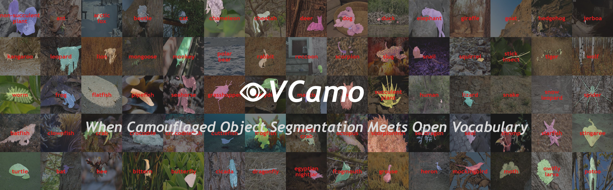

Xiaoqi Zhao 赵骁骐 Dalian University of Technology - IIAU LAB
Address: No.2 Linggong Road, Ganjingzi District, Dalian City, Liaoning, China |
|
Biography
Research Fields
-
Unified Context-dependent Concept Segmentation (Unified Vision Model)
Salient + Camouflaged + Shadow + Transparent + Inharmonious + Defocus Blur + Medical Lesion ... -
Industrial X-ray/CT Machine Vision (Ai4Industry)
Lithium Battery; FPCA; Auto Parts -
Medical Lesion Segmentation & Device Imaging Quality Enhancement (Ai4Health)
Colon Polyp; COVID-19; Breast; Skin; Glaucoma - Self-driven Learning Mode
Self-supervised/Few-shot/In-context/Prompt/Open-Vocabulary Learning -
Multi-modal/source/view Fusion
RGB + X (Depth; Thermal; Optical Flow; Text; Event; Video; View)
Honor
- 2022 Huawei Camera Academic Star (top 8 in the world; 30,000 RMB bonus)
- CVPR 2022 Outstanding Reviewer (~2%[156/6247])
- Third place of PVUW2023 Video Semantic Segmentation Track (CVPR 2023 Challenge)
- Gold Award of The 8th China International College Students' 'Internet+' Innovation and Entrepreneurship Competition, (Company/Project: 工源三仟; ~0.05‰[161/3,400,000+])
- MICCAI 2022 Challenge: Glaucoma Oct Analysis and Layer Segmentation (GOALS) (Team: IIAU-Segmentors; Glaucoma Detection: 1/100; OCT Layer Segmentation: 3/100; GOALS: 2/100; $1,300 bonus)
- Third place of 2018 OPPO Top AI Competition (Portrait Segmentation), 50,000 RMB bonus (3/456)
- Seventh place of 2020 Hualu Cup's first big data competition (Intelligent Diagnosis of Cancer Risk), (7/114)
- Second Prize of Doctoral Academic Forum (2024), Supported by Dalian University of Technology School
- 2024 National Scholarship (Phd)
- 2023 AVIC-LuoYang Scholarship (Phd)
- 2022 National Scholarship (Phd)
- 2020 Huawei Fellowship
- 2019-2024 Outstanding graduate student of Dalian University of Technology
News
- [02/2025]1 paper accepted in CVPR 2025. Congratulations to Shijie !
- [01/2025] Our CAVER (IEEE TIP 2023) is the
ESI Highly Cited Paper (1%) . - [12/2024] I successfully defended my PhD dissertation! Call me Dr.Zhao!😎😎😎
- [08/2024] X3000 INSPECTION fininshed Series A and A+ financing rounds. 🎉🎉🎉 Ai4EVSafety is all you need！
- [07/2024] 1 paper accepted in ECCV 2024.
New Task! Open-Vocabulary Camouflaged Object Segmentation . - [06/2024] 1 paper accepted in TPAMI 2024.
- [05/2024] 1 paper accepted in ICML 2024.
- [03/2024] 1 paper accepted in IJCV 2024.
- [02/2024] 2 papers accepted in CVPR 2024
(1 highlight ~3%[324/11532]) . Ai4Industry in New Electrical Vehicle! - [01/2024] 1 paper accepted in IJCV 2024.
- [07/2023] 1 paper accepted in ICCV 2023.
- [01/2023] 1 paper accepted in IEEE TIP 2023.
- [12/2022] 1 paper accepted in IEEE TIP 2022.
- [03/2022] 1 paper accepted in CVPR 2022.
- [11/2021] 1 paper accepted in AAAI 2022
(~15%[1349/9020]) . - [07/2021] 1 paper accepted in ACM MM 2021
(oral ~9%[179/1942]) . - [06/2021] 1 paper accepted in MICCAI 2021.
- [07/2020] 3 papers accepted in ECCV 2020
(1 oral ~2%[104/5025]) . - [03/2020] 1 paper accepted in CVPR 2020.
Selected Publications [Google Scholar (3000 + citations)]
TPAMI/IJCV/TIP: 7
ICML/CVPR/ECCV/ICCV/AAAI/MM/MICCAI: 14 (2 oral, 1 highlight)
Papers with 500+ Citations: 2
Papers with 100+ Citations: 8
Papers as First/co-First Author: 17
|
|
Inspiring the Next Generation of Segment Anything Models: Comprehensively Evaluate SAM and SAM 2 with Diverse Prompts Towards Context-Dependent Concepts under Different Scenes
[Paper]
[Code]
Xiaoqi Zhao*, Youwei Pang*, Shijie Chang*, Yuan Zhao*, Lihe Zhang, Huchuan Lu, Jinsong Ouyang, Georges El Fakhri, Xiaofeng Liu arXiv, 2025. |
|
|
Spider: A Unified Framework for Context-dependent Concept Segmentation
[Paper]
[Interpretation by CVHub (~7000 views)]
[Code]
Xiaoqi Zhao*, Youweii Pang*, Wei Ji*, Baicheng Sheng, Jiaming Zuo, Lihe Zhang, Huchuan Lu International Conference on Machine Learning( ICML ), 2024. |
|
|
Towards Automatic Power Battery Detection:
New Challenge, Benchmark Dataset and Baseline
[Paper]
[Interpretation by 极市平台]
[Interpretation by X3000 INSPECTION]
[Code]
Xiaoqi Zhao*, Youwei Pang*, Zhenyu Chen, Qian Yu, Lihe Zhang, Hanqi Liu, Jiaming Zuo, Huchuan Lu IEEE Conference on Computer Vision and Pattern Recognition ( CVPR ), 2024. |
|
|
Multi-view Aggregation Network for Dichotomous Image Segmentation
[Paper]
[Code]
Qian Yu*, Xiaoqi Zhao*, Youwei Pang*, Lihe Zhang, Huchuan Lu IEEE Conference on Computer Vision and Pattern Recognition ( CVPR ), 2024. Highlight |
|  | Open-Vocabulary Camouflaged Object Segmentation
[Paper]
[Interpretation by CVHub (~7000 views)]
[Interpretation by 极市平台]
[Code]
Youwei Pang*, Xiaoqi Zhao*, Jiaming Zuo, Lihe Zhang, Huchuan Lu European Conference on Computer Vision ( ECCV ), 2024. |
|
|
Isomer: Isomerous Transformer for Zero-shot Video Object Segmentation
[Paper]
[Code]
Yichen Yuan, Yifan Wang, Lijun Wang, Xiaoqi Zhao, Huchuan Lu, Yu Wang, Weibo Su, Lei Zhang IEEE International Conference on Computer Vision ( ICCV ), 2023. |
|
|
Zoom In and Out: A Mixed-scale Triplet Network for Camouflaged Object Detection
[Paper]
[Code]
Youwei Pang*, Xiaoqi Zhao*, Tian-zhu Xiang, Lihe Zhang, Huchuan Lu IEEE Conference on Computer Vision and Pattern Recognition ( CVPR ), 2022. |
|
|
Self-Supervised Pretraining for RGB-D Salient Object Detection
[Paper]
[Slide&极市平台推送]
[Code]
Xiaoqi Zhao, Youwei Pang, Lihe Zhang, Huchuan Lu, Xiang Ruan Thirty-Sixth AAAI Conference on Artificial Intelligence ( AAAI ), 2022. |
|
|
Multi-Source Fusion and Automatic Predictor Selection for Zero-Shot Video Object Segmentation
[Paper]
[Slide&极市平台推送]
[Code]
Xiaoqi Zhao, Youwei Pang, Jiaxing Yang, Lihe Zhang, Huchuan Lu ACM International Conference on Multimedia ( ACM MM ), 2021. Oral |
|
|
Automatic Polyp Segmentation via Multi-scale Subtraction Network
[Paper]
[Code]
🔥Top 30 Most Cited MICCAI Papers in the Last 5 Years [Link]
Xiaoqi Zhao International Conference on Medical Image Computing and Computer Assisted Intervention ( MICCAI ), 2021. |
|
|
Suppress and Balance: A Simple Gated Network for Salient Object Detection
[Paper]
[Slide]
[Code]
🔥Top 50 Most Cited ECCV Papers (🏆Ranking Top 1 in Visual Saliency Field) in the Last 5 Years [Link]
Xiaoqi Zhao European Conference on Computer Vision ( ECCV ), 2020. Oral |
|
|
A Single Stream Network for Robust and Real-time RGB-D Salient Object Detection
[Paper]
[Code]
Xiaoqi Zhao, Lihe Zhang, Youwei Pang, Huchuan Lu, Lei Zhang European Conference on Computer Vision ( ECCV ), 2020. |
|
|
Multi-scale Interactive Network for Salient Object Detection
[Paper]
[Code]
Youwei Pang*, Xiaoqi Zhao*, Lihe Zhang, Huchuan Lu IEEE Conference on Computer Vision and Pattern Recognition ( CVPR ), 2020. |
|
|
Hierarchical Dynamic Filtering Network for RGB-D Salient Object Detection
[Paper]
[Slide]
[Code]
Youwei Pang, Lihe Zhang, Xiaoqi Zhao, Huchuan Lu European Conference on Computer Vision ( ECCV ), 2020. |
|
|
Towards Diverse Binary Segmentation via A Simple yet General Gated Network
[Paper]
[Code]
Xiaoqi Zhao*, Youwei Pang*, Lihe Zhang, Huchuan Lu, Lei Zhang International Journal of Computer Vision ( IJCV ), 2024. |
|
|
Adaptive Multi-source Predictor for Zero-shot Video Object Segmentation
[Paper]
[Code]
Xiaoqi Zhao*, Shijie Chang*, Youwei Pang, Jiaxing Yang, Lihe Zhang, Huchuan Lu International Journal of Computer Vision ( IJCV ), 2024. |
|
|
ZoomNeXt: A Unified Collaborative Pyramid Network for Camouflaged Object Detection
[Paper] [Code] 
Youwei Pang*, Xiaoqi Zhao*, Tian-Zhu Xiang, Lihe Zhang, Huchuan Lu IEEE Transactions on Pattern Analysis and Machine Intelligence ( TPAMI ), 2024. |
|
|
ComPtr: Towards Diverse Bi-source Dense Prediction Tasks via A Simple yet General Complementary Transformer
[Paper] Youwei Pang*, Xiaoqi Zhao*, Lihe Zhang, Huchuan Lu IEEE Transactions on Pattern Analysis and Machine Intelligence ( TPAMI ), 2024 (under review). |
|
|
Joint Learning of Salient Object Detection, Depth Estimation and Contour Extraction
[Paper]
[Code]
Xiaoqi Zhao, Youwei Pang, Lihe Zhang, Huchuan Lu IEEE Transactions on Image Processing ( TIP ), 2022. |
|
|
CAVER: Cross-Modal View-Mixed Transformer for Bi-Modal Salient Object Detection
[Paper]
[Code]
Youwei Pang, Xiaoqi Zhao, Lihe Zhang, Huchuan Lu IEEE Transactions on Image Processing ( TIP ), 2023. |
|
|
M2SNet: Multi-scale in Multi-scale Subtraction Network for Medical Image Segmentation
[Paper]
[Interpretation by CVHub (~5000 views)]
[Code]
Xiaoqi Zhao, Hongpeng Jia, Youwei Pang, Long Lv, Feng Tian, Lihe Zhang, Weibing Sun, Huchuan Lu 🏆The second place (2/100) in the MICCAI 2022 Challenge: Glaucoma Oct Analysis and Layer Segmentation (GOALS). |
Academic Service
- Journal Reviewer: TPAMI, IJCV, TIP, TMI ...
-
Conference Reviewer:
CVPR: 2025, 2024, 2023, 2022 (Outstanding Reviewer ~2%[156/6247])
ICCV: 2023, 2021
ECCV: 2024, 2022
AAAI: 2025, 2024, 2023, 2022
NeurIPS: 2024, 2023
ICLR: 2025, 2024
ICML: 2024
© Xiaoqi Zhao | Last updated: Mar. 2025 |